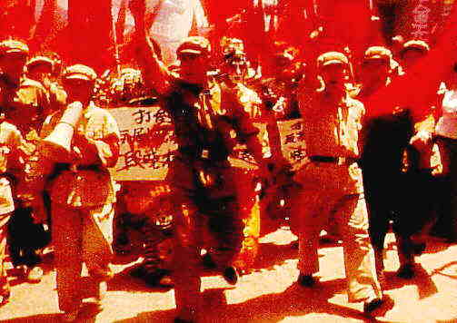

Farewell My Concubine A-, A China/1993/Yellow English Subtitles/Color/Widescreen 1.85:1/Stereo Surround/157 minutes/Directed by Chen Kaige/Starring Leslie Cheung, Zhang Fengyi, Gong Li/Miramax/29 Chaps/2 discs/CLV/$39.99 A sweeping epic that encompasses much of China's political turmoil from the forming of the Republic to the tyranny of the cultural revolution, Farewell My Concubine is a stunning achievement on many levels. Foremost, though set in a vast historical framework, the film is about human relationships. The first section of the film depicts the training for the Peking Opera and introduces the two main protagonists as boys. It opens on a magnificent crowd scene shot in sepia tones. Douzi's mother is accosted by a former client. Using her point of view, a sense of desperation is established by the superb camera work. She is attracted by a troupe of Peking Opera artists performing in the street and from this chance encounter is born her inspiration to leave her child  in the care of these stern masters of Chinese traditional art form. As the film fills its cup of color, the mother painfully abandons her son, in an intensely emotional group of scenes culminating in a shocking act of determination. These early years are a magnificent achievement in rich story telling. A world is created in the same short, economical brush strokes that are used to form the Chinese letters. The relationship between Cheng Deiyi(Douzi) and Duan Xiaolou(Shitou) is formed by bonds so strong they can only be broken with finality in one way.The film moves forward with historical inevitability. The boys grow to manhood and their talents captivate the world of Peking Opera. Xiaolou, who plays the male roles on the stage becomes enamored of a beautiful prostitute and the film takes a turn toward soap opera and romance. While nothing overtly sexual between Deiyi and Xiaolou has been depicted, XIaolou's liaison with Juxian is like a hatchet wrought between the bond of these two men. Many levels of sexuality are examined in Farewell My Concubine as is the formation of sexual identity. The delicacy with which it is handled makes the accessible to a broad range of audiences. Surviving through the years of Japanese occupation, the fortunes of the opera troupe are overturned in the "rapids" of the winding political river. First the Nationalists come to power at the end of the war and the players are denounced as collaborators. These players are but pawns in the winds of change as storm after storm rages to sweep their doll-like forms asunder. The film recaptures the amazing emotional power of its earliest sections during the dreadful playing out of the Cultural Revolution. In the most artfully dramatic sequence of the film, Xiaolou denounces Cheng during a Red Guard demonstration. Bereft of what dignity remains, he spews forth a vituperative outburst against his spiritual brother that finally prompts Deiyi to explode in response. Deiyi paces back and forth in front of the crowd, berating his fate and that of the world and finally turning on Juxian to denounce her as a prostitute. Director Kaige orchestrates this sequence as if it were playing itself out on the stage of the opera. The astounding power of the sequence is electrified further by incredible tour-de-force of editing, intercutting horrified close-ups of the beautiful Juxian with the bowed apparition of Xiaolou to the frenetic pacing of Deiyi. The pathetic betrayal by Xiaolou of everything he has loved in itself is the strongest condemnation of a China that fostered this inhumane behavior. The actors are at their best in this climatic scene. Zhang Fengyi turns his portrayal of Xiaolou from a proud, bravura actor strutting through life to one at the very bowels of human existence as he wretches out these stunning betrayals. Leslie Cheung explodes with a pent up reserve of pyrotechnics. Gong Li, as the exquisite Juxian, brings the balance and power of magnificent subtlety to her expressions that penetrate to the center of the heart. Farewell My Concubine is photographed and lit with consummate taste by director of photography Gu Changwei, who was nominated for an Academy Award for his work. The music by Zhao Jiping is consistently stirring. The production is a feast for eye, ear and heart. Thank goodness that the disc edition does justice to the film. All the spectacle of the movie is provided in this wonderful transfer. Subtleties of light, richness of color, power of image are sharply outlined and distinguished. The sound mix utilizes a wide dynamic range with pristine highs and accurate bass. Don't miss this blistering epic. |
.